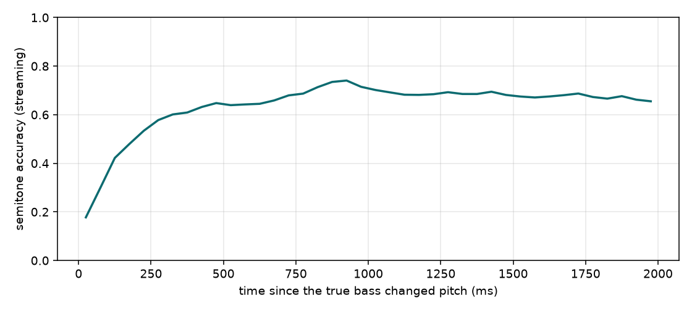

The causal BassNet trained on Slakh2100 now runs frame by frame: audio in, bass notes out, one 10 ms frame at a time. This page measures what the strictly streaming version costs compared with the offline evaluation, and where its remaining errors come from.
The goal. We want a system that listens to a band playing without a bass player and plays a fitting bass line along with them, live. A musician steers it with a 2-D control pad (for example: sparser or busier, lower or higher).
The starting point. BassNet (Grachten, Lattner and Deruty, 2020) does this offline: it takes a finished recording without bass and generates a bass track for it. It looks at the music in short windows and, for each 10 ms step, predicts three things about the bass: which pitch it plays, how loud it is, and whether a new note starts. A small synthesiser then turns these predictions into notes and sound. A 2-D latent variable z selects among the many bass lines that would fit the same music; it is learned without labels.
Why "offline" is not enough. The original system may look at the future of the song. In a live setting the future has not happened yet. So far we have (1) reimplemented BassNet from the paper, since no code was available at the time, and checked it against the paper on artificial data; (2) made every part causal, so that each prediction uses only audio that has already been heard; (3) trained it on Slakh2100, a public collection of about 1,700 multitrack songs (73 hours used for training). The previous report showed that this causal model learns useful bass lines and that z controls how busy the bass is.
What this page adds. Training and testing a model causally is still not the same as running it live. The evaluation so far had small hidden look-aheads in the way windows were stitched together and in how notes were decided afterwards. Here the model runs truly frame by frame, as it would on stage, and we measure (a) whether it is fast enough, (b) how much quality the strictly live version loses, and (c) what causes the remaining errors.
It runs in real time on a GPU. The full chain (incremental CQT, model, note decisions) takes 6.1 ms median and 9.7 ms worst case per frame on an RTX 3090; no frame in 30 s missed its deadline. On a CPU the model alone takes 353 ms per frame, 35 times too slow.
Removing the hidden look-ahead costs little at frame level. Replacing the offline overlap-averaging by one window per frame raises pitch cross-entropy from 1.92 to 1.98 and lowers within-50-cent accuracy from 60.2% to 59.7%.
The bass reacts late. In the first 50 ms after the real bass changes note, only 18% of predicted frames have the right pitch; it takes about 300 ms to reach 60% and 500 ms to settle near 68%. Those first 300 ms are 31% of all frames but 46% of all errors. Reacting instantly would lift overall accuracy from 58.8% to 67.9%.
Onsets are late by construction. The model's onset peaks come a median 30 ms after the MIDI note starts, exactly like the training targets themselves, which were delayed by 2 frames to keep them causal. A note tracker that waits one more frame to confirm a peak loses about a quarter of its matches.
Frame-wise output is jittery. The streaming argmax pitch changes 4.3 times per 100 frames, against 1.2 for the real bass. A simple causal filter brings this to 1.7 at a cost of 0.6 points of accuracy.
The model depends on the input level. A ±6 dB change in mix level costs about one point of within-50-cent accuracy; ±12 dB costs 3.6 points, and −24 dB costs 13.5. Training mixes were peak-normalised per song, which a live system cannot do.
The engine keeps the last 2.05 s of audio in a ring buffer. For every new 160-sample hop it computes one CQT frame as a matrix product with the right-aligned kernels, appends it to a 40-frame window, runs the decoder with a user-given z and keeps only the newest frame. Streaming CQT frames match the offline CQT to within 3·10⁻⁴ (features are stored in float16). Times are for 30 s of audio after a 0.5 s warm-up.
| Per 10 ms frame | GPU median | GPU p95 | GPU max | CPU median | CPU p95 |
|---|---|---|---|---|---|
| Incremental CQT | 0.26 ms | 0.30 ms | 0.91 ms | 2.4 ms | 2.8 ms |
| Model (decoder, one 40-frame window) | 5.81 ms | 6.05 ms | 9.43 ms | 353 ms | 485 ms |
| Note decisions | 0.01 ms | 0.01 ms | 0.24 ms | 0.02 ms | 0.03 ms |
| Total | 6.08 ms | 6.33 ms | 9.69 ms | 356 ms | 487 ms |
The CPU cost comes from re-running the model over the whole 40 × 264 window every frame. Two savings are available without retraining: cache the convolution states so only the newest time column is computed, and cache the z branch, which does not change while z is fixed.
Same checkpoint, same 40 test songs, z taken from the encoder in all rows. "Offline" is the evaluation used so far: a window every 20 frames with overlaps averaged, which lets a frame see up to 200 ms of later audio, and notes whose pitch is the median over the whole note. "Streaming" uses one window per frame and decides every note at the moment it starts.
| Frame level | Pitch CCE | Within 50 cents | Level BCE | Onset BCE |
|---|---|---|---|---|
| Offline (overlap-averaged) | 1.924 | 60.2% | 0.557 | 0.119 |
| Streaming (newest frame only) | 1.984 | 59.7% | 0.558 | 0.125 |
| Note level, against MIDI (±50 ms) | Onset F1 | Precision | Recall | Right pitch, matched notes |
|---|---|---|---|---|
| Offline predictions, offline notes | 0.537 | 0.480 | 0.610 | 59.8% |
| Streaming predictions, offline notes | 0.527 | 0.490 | 0.572 | 59.9% |
| Streaming, note on at threshold crossing (0 frames) | 0.615 | 0.572 | 0.665 | 40.8% |
| Streaming, note on 1 frame after the peak | 0.454 | 0.422 | 0.492 | 40.3% |
| Streaming, note on 2 frames after the peak | 0.336 | 0.312 | 0.363 | 39.2% |
Two effects stand out. Pitch accuracy of notes drops from 60% to 41% once the pitch must be chosen at the onset instead of from the whole note: this is the reaction lag below. And onset F1 falls with every frame of confirmation, because predicted onsets already sit near the late edge of the ±50 ms window.

| Time since the real bass changed note | 0–50 ms | 100–150 ms | 200–250 ms | 300–350 ms | 500–550 ms | > 1 s |
|---|---|---|---|---|---|---|
| Semitone accuracy | 17.7% | 42.2% | 53.4% | 60.1% | 63.9% | ≈ 68% |
A causal model only learns that the harmony has moved after it hears it in the mix, and the low CQT bands integrate over about a second. Bass players, by contrast, change chord together with the band. This is the largest single source of pitch errors we have found: 46% of all errors, with an upper bound of +9 points of accuracy if it were removed. It points to giving the model a way to anticipate: longer context to learn the song's repetitions, beat and bar position as inputs, and onset targets aligned to the true note starts.
| Peak time minus MIDI note start (10 songs) | Median | Upper quartile | Onsets |
|---|---|---|---|
| Training target (madmom, delayed 2 frames for causality) | +30 ms | +50 ms | 4694 |
| Model prediction (streaming) | +30 ms | +50 ms | 3723 |
The model reproduces its target's timing; the lateness is in the target. Since Slakh comes with MIDI, the onset target can be aligned to the true note starts, and an onset-specific anticipation can then be traded against accuracy like δ.
The model has no memory of what it played, so the frame-wise pitch flips more often than a bass player would. A forward filter over semitones (stay probability p, otherwise uniform) is causal and needs no retraining.
| Streaming pitch | Semitone accuracy | Pitch changes per 100 frames |
|---|---|---|
| Real bass (MIDI) | — | 1.22 |
| No smoothing | 58.8% | 4.33 |
| Forward filter, p = 0.5 | 58.1% | 1.67 |
| Forward filter, p = 0.9 | 57.8% | 1.44 |
| Forward filter, p = 0.95 | 57.7% | 1.38 |
Training mixes were peak-normalised per song, which a live system cannot do. A gain on the mix is applied exactly on the stored log-CQT features; 20 test songs, streaming predictions.
| Mix gain | Pitch CCE | Within 50 cents | Level BCE | Onset BCE |
|---|---|---|---|---|
| −24 dB | 2.404 | 47.6% | 0.620 | 0.178 |
| −12 dB | 2.118 | 57.6% | 0.575 | 0.153 |
| −6 dB | 2.046 | 59.9% | 0.571 | 0.148 |
| 0 dB (as trained) | 2.022 | 61.2% | 0.571 | 0.146 |
| +6 dB | 2.058 | 60.5% | 0.575 | 0.147 |
| +12 dB | 2.161 | 57.6% | 0.582 | 0.152 |
The model tolerates ±6 dB but degrades beyond that, more steeply for quiet input. Gain augmentation during training, or a causal running normalisation used both in training and live, should remove this.
Three test songs, 30 s each. "Offline" clips are those of the previous report; "streaming" clips use one window per frame and the causal note tracker (one confirmation frame), so every note is decided when it starts. Generated bass uses a General MIDI bass from FluidSynth.